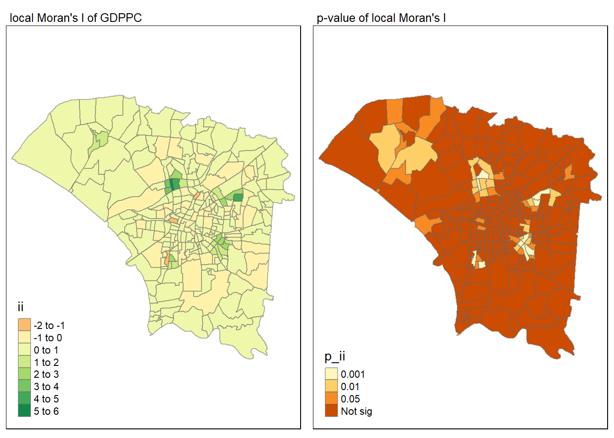
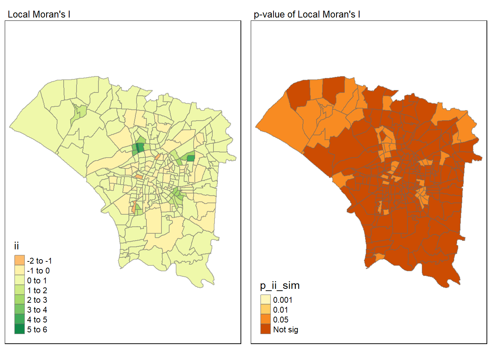
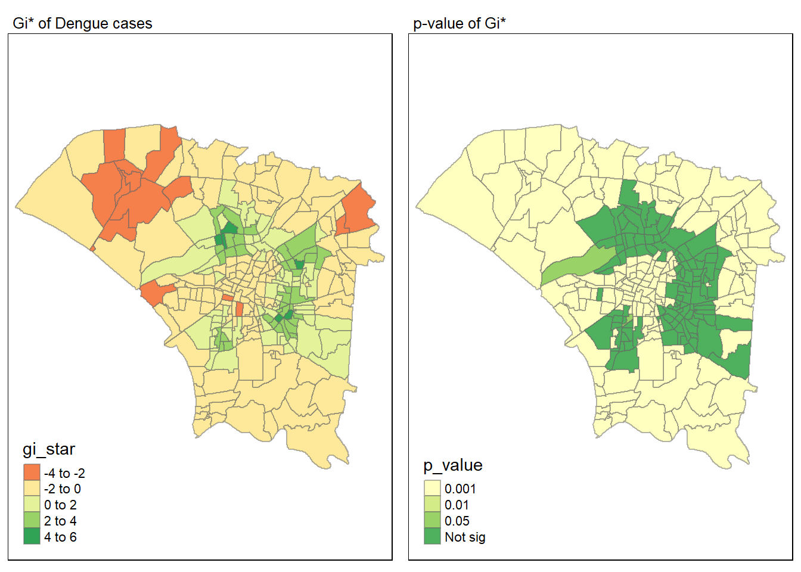
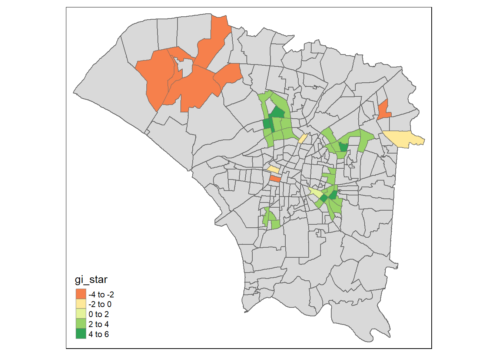

pacman::p_load(tidyverse, tmap, sf, sp, sfdep)Take-home Exercise 2: Application of Spatial and Spatio-temporal Analysis Methods to Discover the Distribution of Dengue Fever in Tainan City, Taiwan
1.0 Introduction
1.1. Overview - Setting the Scene
Dengue Hemorrhagic Fever (in short dengue fever) is one of the most widespread mosquito-borne diseases in the most tropical and subtropical regions. It is an acute disease caused by dengue virus infection which is transmitted by female Aedes aegypti and Aedes albopictus mosquitoes. In 2015, Taiwan had recorded the most severe dengue fever outbreak with more than 43,000 dengue cases and 228 deaths. Since then, the annual reported dengue fever cases were maintained at the level of not more than 200 cases. However, in 2023, Taiwan recorded 26703 dengue fever cases.
1.2 Objectives
In this study, we are interested to discover:
If the distribution of dengue fever outbreak at Tainan City, Taiwan are independent from space and space and time.
If the outbreak is indeed spatial and spatio-temporal dependent, then, you would like to detect where are the clusters and outliers, and the emerging hot spot/cold spot areas.
1.3 Getting Started
In this take-home exercise, we will be using the following packages.
2.0 Data Acquisition
We will be using 2 data sets in this exercise:
| Data | Format | Description | Source |
|---|---|---|---|
| TAIWAN_VILLAGE_2020 | ESRI Shapefile | A geospatial data of village boundary of Taiwan | data.gov.tw |
| Dengue_Daily.csv | csv | An aspatial data of reported dengue cases in Taiwan since 1998 | Taiwan CDC Open Data Portal |
Create a new folder labelled Take-home_Ex02 and place all the files into this folder.
3.0 Importing Geospatial and Aspatial Data
3.1 Importing Geospatial data
TAIWAN_VILLAGE_2020
The TAIWAN_VILLAGE_2020 dataset was acquired in ESRI shapefile format (.shp). To utilise this dataset in the R-environment, we need to import it as an sf object using the st_read() function from the sf package. This function is used to read the shapefile containing the administrative boundaries of Tainan City and returns an sf object named tainan_sf.
tainan_sf <- st_read(dsn = "data/geospatial",
layer = "TAINAN_VILLAGE")Reading layer `TAINAN_VILLAGE' from data source
`C:\kt526\IS415-GAA\Take-home_Ex\Take-home_Ex02\data\geospatial'
using driver `ESRI Shapefile'
Simple feature collection with 649 features and 10 fields
Geometry type: POLYGON
Dimension: XY
Bounding box: xmin: 120.0269 ymin: 22.88751 xmax: 120.6563 ymax: 23.41374
Geodetic CRS: TWD973.2 Importing Aspatial data
Dengue_Daily
The Dengue_Daily dataset is available in csv format (.csv) and was obtained from the Taiwan CDC Open Data Portal. Like the previous dataset, it needs to be imported into the R environment for use. However, since this dataset is aspatial and in csv format, a different method is required for reading it. We will utilize the read_csv() function to import the csv dataset and store the object in a tibble data frame named dengue.
dengue <- read_csv("data/aspatial/Dengue_Daily.csv")
head(dengue)# A tibble: 6 × 26
發病日 個案研判日 通報日 性別 年齡層 居住縣市 居住鄉鎮 居住村里
<date> <chr> <date> <chr> <chr> <chr> <chr> <chr>
1 1998-01-02 None 1998-01-07 男 40-44 屏東縣 屏東市 None
2 1998-01-03 None 1998-01-14 男 30-34 屏東縣 東港鎮 None
3 1998-01-13 None 1998-02-18 男 55-59 宜蘭縣 宜蘭市 None
4 1998-01-15 None 1998-01-23 男 35-39 高雄市 苓雅區 None
5 1998-01-20 None 1998-02-04 男 55-59 宜蘭縣 五結鄉 None
6 1998-01-22 None 1998-02-19 男 20-24 桃園市 蘆竹區 None
# ℹ 18 more variables: 最小統計區 <chr>, 最小統計區中心點X <chr>,
# 最小統計區中心點Y <chr>, 一級統計區 <chr>, 二級統計區 <chr>,
# 感染縣市 <chr>, 感染鄉鎮 <chr>, 感染村里 <chr>, 是否境外移入 <chr>,
# 感染國家 <chr>, 確定病例數 <dbl>, 居住村里代碼 <chr>, 感染村里代碼 <chr>,
# 血清型 <chr>, 內政部居住縣市代碼 <chr>, 內政部居住鄉鎮代碼 <chr>,
# 內政部感染縣市代碼 <chr>, 內政部感染鄉鎮代碼 <chr>4.0 Data Wrangling
4.1 Preparing a study area layer with specific counties of Tainan City, Taiwan
Task: Confining study area layer to D01, D02, D04, D06, D07, D08, D32 and D39 counties
In this Take-home Exercise, we are interested in narrowing our focus to specific counties within Tainan City, specifically D01, D02, D04, D06, D07, D08, D32, and D39. To prepare a study area layer focusing on these specific counties, we can do the following:
counties <- c('D01', 'D02', 'D04', 'D06', 'D07', 'D08', 'D32', 'D39')
tainan_counties_sf <- tainan_sf %>%
select(COUNTYNAME,
TOWNID,
TOWNNAME,
VILLNAME,
geometry) %>%
mutate(TOWNNAME_VILLNAME = paste(TOWNNAME, VILLNAME, sep="_")) %>%
filter(TOWNID %in% counties)
Notes
The c() function is used to combine the specified counties into a vector (a one dimensional array) named counties. Next, we will filter the Tainan City spatial data frame (tainan_sf) based on the TOWNID column, selecting only those entries that match the counties of interest listed in the counties vector. This refined dataset, named tainan_counties_sf, will serve as our study area layer for further analysis or visualization tasks.
Note: Check that tainan_counties_sf only contains polygon features.

4.2 Preparing a dengue fever layer with specific counties of Tainan City, Taiwan
Tasks:
- Extracting dengue fever cases within epidemiology week 31-50, 2023
- Confining dengue fever layer to D01, D02, D04, D06, D07, D08, D32 and D39 counties
4.2.1 Extracting dengue fever cases within epidemiology week 31-50, 2023
dengue_2023 <- dengue %>%
select(發病日,
最小統計區中心點X,
最小統計區中心點Y,
居住縣市,
居住鄉鎮,
居住村里) %>%
mutate(EPIWEEK = epiweek(發病日),
TOWNNAME_VILLNAME = paste(居住鄉鎮, 居住村里, sep="_")) %>%
filter(year(發病日) == 2023 & 居住村里 != "None") %>%
rename("ONSET_DATE" = 發病日,
"X_COORDINATE" = 最小統計區中心點X,
"Y_COORDINATE" = 最小統計區中心點Y,
"COUNTYNAME" = 居住縣市,
"TOWNNAME" = 居住鄉鎮,
"VILLNAME" = 居住村里)Visualizing the distribution of dengue fever cases across the epidemiology weeks
ggplot(dengue_2023, aes(x = EPIWEEK)) +
geom_histogram(binwidth = 1, color = "grey") +
labs(x = "EPIWEEK", y = "count") +
ggtitle("Distribution of Dengue Cases in 2023 by Epidemiology weeks") +
theme_minimal()
More than 80% of the reported dengue fever cases occurred in epidemiology week 31-50, 2023.
dengue_2023_epiweeks_31_50_df <- dengue_2023 %>%
filter(between(EPIWEEK, 31, 50) )
unique(dengue_2023_epiweeks_31_50_df$EPIWEEK) [1] 31 32 33 34 35 36 37 38 39 40 41 42 43 44 45 46 47 48 49 504.2.2 Confining dengue fever layer to D01, D02, D04, D06, D07, D08, D32 and D39 counties
dengue_fever_layer_df <- dengue_2023_epiweeks_31_50_df %>%
select(ONSET_DATE,
X_COORDINATE,
Y_COORDINATE,
COUNTYNAME,
TOWNNAME,
VILLNAME,
EPIWEEK) %>%
mutate(TOWNNAME_VILLNAME = paste(TOWNNAME, VILLNAME, sep="_")) %>%
filter(COUNTYNAME == "台南市" & TOWNNAME %in% c("安南區", "仁德區", "中西區",
"南區", "永康區", "東區", "北區", "安平區"))4.3 Preparing a dengue fever layer in spacetime d3 class of sfdep
dengue_grp <- dengue_fever_layer_df %>%
filter(VILLNAME != "None") %>%
group_by(TOWNNAME_VILLNAME, EPIWEEK) %>%
summarise(num_dengue_cases = n()) %>%
complete(EPIWEEK = 31:50, fill = list(num_dengue_cases = 0))tainan_counties_with_dengue <- tainan_counties_sf %>%
mutate(TOWNNAME_VILLNAME = paste(TOWNNAME, VILLNAME, sep="_")) %>%
select(TOWNNAME_VILLNAME, geometry) %>%
filter(TOWNNAME_VILLNAME %in% unique(dengue_grp$TOWNNAME_VILLNAME))tainan_dengue_st <- spacetime(.data = dengue_grp,
.geometry = tainan_counties_with_dengue,
.loc_col = "TOWNNAME_VILLNAME",
.time_col = "EPIWEEK")
#dengue_st_test <- spacetime(dengue_grp, tainan_counties_with_dengue,
# .loc_col = "TOWNNAME_VILLNAME",
# .time_col = "EPIWEEK")
#
#is_spacetime_cube(dengue_st_test)is_spacetime_cube(tainan_dengue_st)[1] TRUE
Note
The TRUE return confirms that tainan_dengue_st is indeed an time-space cube.
4.4 Preparing for Exploratory Data Analysis
total_dengue_cases_by_village <- dengue_grp %>%
select(TOWNNAME_VILLNAME,
num_dengue_cases) %>%
group_by(TOWNNAME_VILLNAME) %>%
summarise(total_dengue_cases = sum(num_dengue_cases))tainan_dengue_cases_by_village <- left_join(tainan_counties_sf,
total_dengue_cases_by_village,
by = "TOWNNAME_VILLNAME") %>%
replace_na(list(total_dengue_cases = 0))which(colSums(is.na(tainan_dengue_cases_by_village))>0)named integer(0)5.0 Exploratory Data Analysis
5.1 Visualising the distribution of dengue fever cases
tmap_mode("plot")
tm_shape(tainan_dengue_cases_by_village) +
tm_fill("total_dengue_cases",
style = "jenks",
palette = "Reds",
title = "Number of Dengue Cases",
legend.show = TRUE,
popup.vars = c("total_dengue_cases")) +
tm_layout(main.title = "Distribution of Total Dengue Cases in Tainan",
main.title.position = "center",
main.title.size = 1,
legend.height = 0.5,
legend.width = 0.4,
frame = TRUE) +
tm_borders(alpha = 0.8) +
tm_compass(type="8star", size = 1.5) +
tm_scale_bar() +
tm_grid(alpha = 0.2)equal <- tm_shape(tainan_dengue_cases_by_village) +
tm_fill("total_dengue_cases",
n = 5,
style = "equal") +
tm_borders(alpha = 0.5) +
tm_layout(main.title = "Equal interval classification")
quantile <- tm_shape(tainan_dengue_cases_by_village) +
tm_fill("total_dengue_cases",
n = 5,
style = "quantile") +
tm_borders(alpha = 0.5) +
tm_layout(main.title = "Equal quantile classification")
tmap_arrange(equal,
quantile,
asp=1,
ncol=2)
6.0 Spatial Autocorrelation Analysis
“Everything is related to everything else, but near things are more related than distant things.”
– Waldo Tobler, The First Law of Geography
Spatial Autocorrelation is used to describe the presence of systematic spatial variation in a variable.
The two main types of Spatial Autocorrelation Analysis are:
Global spatial autocorrelation analysis
Local spatial autocorrelation analysis
6.2.1 Global Spatial Autocorrelation Analysis
6.2.1.1 Measures of Global of Spatial Autocorrelation: Moran’s I and Geary’s C
We can test the presence of spatial autocorrelation using the Moran’s I or Geary’s C.
| Moran’s I | Geary’s C |
|---|---|
 |
 |
Describe how features differ from the values in the study area as a whole. Interpreting the Z value using Moran’s I:
|
Describing how features differ from their immediate neighbours. Interpreting the Z value using Geary’s c:
|
In this Take-home Exercise, we use Moran’s I to test the spatial autocorrelation. To test for spatial autocorrelation, we can follow the steps below:
- State the null and alternative hypotheses
- H0 (null hypothesis):
- H1 (alternative hypothesis):
- Choose the significance level ⍺
- Statistically, we select the confident interval as 95% => alpha value (⍺) = 0.05.
- Calculate the test statistic
- State the conclusion
- Reject the Null hypothesis (H0) if p-value is smaller than alpha value.
- Failed to reject the Null Hypothesis (H0) if p-value is greater than alpha value.
6.2.1.2 Compute Spatial Weights
To calculate global spatial autocorrelation statistics effectively, we need to first construct the spatial weights for the study area. The spatial weights play a critical role in defining the neighbourhood relationships between geographical units within the study area.
There are several methods to construct spatial weights. We will be using the Contiguity-Based method to construct the spatial weights and derive the Weights Matrix.
Contiguity-Based Weights
This method establishes neighbourhood relationships based on contiguity, where geographical units sharing common borders (boundaries) are considered neighbours. Contiguity can be further categorised into the following cases:

“rook” contiguity (sharing a common edge)
“bishop” contiguity, (sharing common vertices)
“queen” contiguity (sharing a common edge or vertex)
Note
“rook” and “queen” contiguity are more commonly used. Therefore, the number of neighbours according to the queen criterion will always be at least as large as for the rook criterion.
To derive the Contiguity-Based Weights,
wm_q <- tainan_dengue_cases_by_village %>%
mutate(nb = st_contiguity(geometry),
wt = st_weights(nb,
style = "W"),
.before = 1)
glimpse(wm_q)Rows: 258
Columns: 9
$ nb <nb> <6, 118, 160>, <126, 128, 138, 168, 222>, <68, 69, 1…
$ wt <list> <0.3333333, 0.3333333, 0.3333333>, <0.2, 0.2, 0.2,…
$ COUNTYNAME <chr> "臺南市", "臺南市", "臺南市", "臺南市", "臺南市", "…
$ TOWNID <chr> "D06", "D32", "D08", "D02", "D06", "D06", "D08", "D…
$ TOWNNAME <chr> "安南區", "仁德區", "中西區", "南區", "安南區", "安…
$ VILLNAME <chr> "青草里", "保安里", "赤嵌里", "大成里", "城北里", "…
$ TOWNNAME_VILLNAME <chr> "安南區_青草里", "仁德區_保安里", "中西區_赤嵌里", …
$ total_dengue_cases <int> 2, 19, 111, 29, 1, 10, 37, 48, 108, 66, 26, 2, 3, 1…
$ geometry <POLYGON [°]> POLYGON ((120.1176 23.08387..., POLYGON ((1…6.2.1.3 Compute Global Moran’s I
We will compute the global moran’s I value using the global_moran() function. The output is a tibble data.frame.
moranI <- global_moran(wm_q$total_dengue_cases,
wm_q$nb,
wm_q$wt)
glimpse(moranI)List of 2
$ I: num 0.419
$ K: num 5.646.2.1.4 Perform Global Moran’s I Test
In order to perform the Global Moran’s I Test, we will be using the global_moran_test() function from sfdep package.
global_moran_test(wm_q$total_dengue_cases,
wm_q$nb,
wm_q$wt)
Moran I test under randomisation
data: x
weights: listw
Moran I statistic standard deviate = 11.523, p-value < 2.2e-16
alternative hypothesis: greater
sample estimates:
Moran I statistic Expectation Variance
0.418994015 -0.003891051 0.001346765
Interpreting the results
6.2.1.5 Perform Global Moran’s I Permutation Test with Monte-Carlo Simulation
In practice, monte carlo simulation should be used to perform the statistical test. We can use the global_moran_perm() function of sfdep package to run the monte carlo simulation.
Note
The set.seed() function in R is used to create reproducible results when writing code that involves creating variables that take on random values. The value placed in the seed can be any random integer. By using the set.seed() function, you guarantee that the same random values are produced each time you run the code. Read more about setting seeds here.
set.seed(1234)
global_moranI_perm <- global_moran_perm(wm_q$total_dengue_cases,
wm_q$nb,
wm_q$wt,
nsim = 99)
global_moranI_perm
Monte-Carlo simulation of Moran I
data: x
weights: listw
number of simulations + 1: 100
statistic = 0.41899, observed rank = 100, p-value < 2.2e-16
alternative hypothesis: two.sided
Important
The number of simulations is always equal to nsim + 1. Since nsim = 99, this means that we will be performing 100 simulations.
Interpreting the results
6.2.1.6 Visualising Global Monte-Carlo Moran’s I
Let us visualise the simulated Moran’s I test statistics by plotting the distribution of the statistical values using a histogram.
hist(global_moranI_perm$res,
freq=TRUE,
breaks=20,
xlab="Simulated Moran's I")
abline(v=0,
col="red") 
We can also look at the summary statistics using the summary() function.
summary(global_moranI_perm$res[1:99]) Min. 1st Qu. Median Mean 3rd Qu. Max.
-0.096780 -0.028551 -0.008242 -0.006598 0.012804 0.097668 6.2.2 Local Spatial Autocorrelation Analysis
6.2.2.1 Computing Local Moran’s I and p-value
We will compute the local moran’s I value using the local_moran() function. The output is a sf data.frame.
lisa <- wm_q %>%
mutate(local_moran = local_moran(
total_dengue_cases, nb, wt, nsim = 99),
.before = 1) %>%
unnest(local_moran)6.2.2.2 Visualizing local Moran’s I and p-value
The tmap functions are used to prepare a choropleth map by using values in the ii and p_ii_sim fields.
tmap_mode("plot")
map1 <- tm_shape(lisa) +
tm_fill("ii") +
tm_borders(alpha = 0.5) +
tm_view(set.zoom.limits = c(6,8)) +
tm_layout(main.title = "Local Moran's I",
main.title.size = 0.8)
map2 <- tm_shape(lisa) +
tm_fill("p_ii_sim",
breaks = c(0, 0.001, 0.01, 0.05, 1),
labels = c("0.001", "0.01", "0.05", "Not sig")) +
tm_borders(alpha = 0.5) +
tm_layout(main.title = "p-value of Local Moran's I",
main.title.size = 0.8)
tmap_arrange(map1, map2, ncol = 2)
6.2.2.3 Visualize the Local Indicator of Spatial Association (LISA) map
The LISA map is a categorical map showing outliers and clusters. LISA map is an interpreted map by combining local Moran’s I of geographical areas and their respective p-values. There are two types of outliers namely: High-Low and Low-High outliers. Likewise, there are two types of clusters namely: High-High and Low-Low clusters.
lisa_sig <- lisa %>%
filter(p_ii < 0.05)
tmap_mode("plot")
tainan_counties_map <- tm_shape(tainan_counties_sf) +
tm_polygons("TOWNID")
lisa_map <- tm_shape(lisa) +
tm_polygons() +
tm_borders(alpha = 0.5) +
tm_shape(lisa_sig) +
tm_fill("mean") +
tm_borders(alpha = 0.4)
tmap_arrange(tainan_counties_map, lisa_map, ncol = 2)
Interpreting the results
6.2.3 Hot Spot and Cold Spot Area Analysis (HCSA)
HCSA uses spatial weights to identify locations of statistically significant hot spots and cold spots in an spatially weighted attribute that are in proximity to one another based on a calculated distance. The analysis groups features when similar high (hot) or low (cold) values are found in a cluster. The polygon features usually represent administration boundaries or a custom grid structure.
6.2.3.1 Derive Spatial Weights
wm_idw <- tainan_dengue_cases_by_village %>%
mutate(nb = st_contiguity(geometry),
wts = st_inverse_distance(nb, geometry,
scale = 1,
alpha = 1),
.before = 1)6.2.3.2 Compute Gi statistics
HCSA <- wm_idw %>%
mutate(local_Gi = local_gstar_perm(
total_dengue_cases, nb, wt, nsim = 99),
.before = 1) %>%
unnest(local_Gi)
HCSASimple feature collection with 258 features and 16 fields
Geometry type: POLYGON
Dimension: XY
Bounding box: xmin: 120.0627 ymin: 22.89401 xmax: 120.2925 ymax: 23.09144
Geodetic CRS: TWD97
# A tibble: 258 × 17
gi_star e_gi var_gi p_value p_sim p_folded_sim skewness kurtosis nb
<dbl> <dbl> <dbl> <dbl> <dbl> <dbl> <dbl> <dbl> <nb>
1 -1.95 0.00286 2.33e-6 -1.68 0.0921 0.02 0.01 0.845 <int>
2 -1.64 0.00356 1.70e-6 -1.64 0.101 0.08 0.04 0.146 <int>
3 -1.44 0.00431 1.37e-6 -1.86 0.0628 0.08 0.04 0.209 <int>
4 -0.244 0.00367 1.84e-6 -0.0987 0.921 0.96 0.48 0.426 <int>
5 -2.23 0.00329 2.58e-6 -1.91 0.0562 0.02 0.01 0.765 <int>
6 -2.86 0.00335 1.41e-6 -2.67 0.00765 0.02 0.01 0.322 <int>
7 -0.851 0.00324 2.06e-6 -0.531 0.595 0.64 0.32 0.622 <int>
8 0.0840 0.00392 1.33e-6 0.0438 0.965 0.86 0.43 0.432 <int>
9 1.84 0.00411 1.66e-6 1.96 0.0500 0.04 0.02 0.0233 <int>
10 -0.971 0.00381 1.69e-6 -0.979 0.328 0.36 0.18 0.194 <int>
# ℹ 248 more rows
# ℹ 8 more variables: wts <list>, COUNTYNAME <chr>, TOWNID <chr>,
# TOWNNAME <chr>, VILLNAME <chr>, TOWNNAME_VILLNAME <chr>,
# total_dengue_cases <int>, geometry <POLYGON [°]>6.2.3.3 Mapping Gi statistics
tmap_mode("plot")
map1 <- tm_shape(HCSA) +
tm_fill("gi_star") +
tm_borders(alpha = 0.5) +
tm_view(set.zoom.limits = c(6,8)) +
tm_layout(main.title = "Gi* of Dengue cases",
main.title.size = 0.8)
map2 <- tm_shape(HCSA) +
tm_fill("p_value",
breaks = c(0, 0.001, 0.01, 0.05, 1),
labels = c("0.001", "0.01", "0.05", "Not sig")) +
tm_borders(alpha = 0.5) +
tm_layout(main.title = "p-value of Gi*",
main.title.size = 0.8)
tmap_arrange(map1, map2, ncol = 2)
HCSA_sig <- HCSA %>%
filter(p_sim < 0.05)
tmap_mode("plot")
tm_shape(HCSA) +
tm_polygons() +
tm_borders(alpha = 0.5) +
tm_shape(HCSA_sig) +
tm_fill("gi_star") +
tm_borders(alpha = 0.4)
7.0 Emerging Hot Spot Analysis (EHSA)
Emerging Hot Spot Analysis (EHSA) is a spatio-temporal analysis method for revealing and describing how hot spot and cold spot areas evolve over time. We will be using the spacetime cube that was created previously.